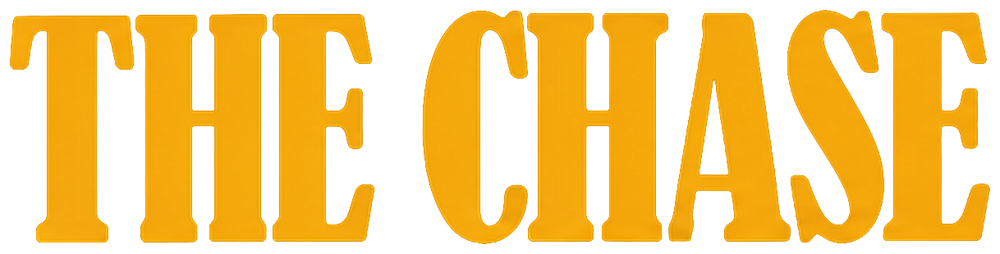

AN UNOFFICIAL TRIBUTE TO QUENTIN TARANTINO'S CINEMA

A GRAPHIC-NOVEL ACTION THRILLER
MY CONTRIBUTION TO THE FILM
AI-Generated Video Footage
Footage created by Jin Kim for the sequence from 01:59 to 03:38.
MY CONTRIBUTION TO THE FILM
AI-Generated Video Footage
Footage created by Jin Kim for the sequence from 01:59 to 03:38.